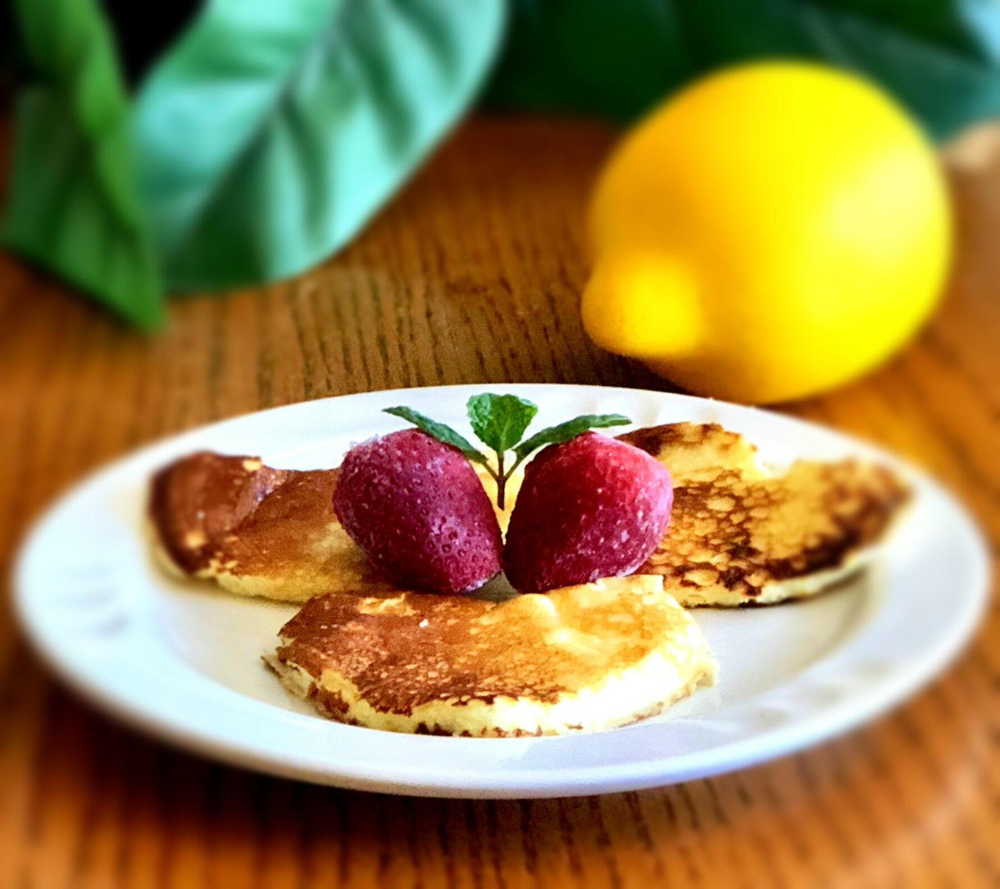

Romantic Lemon Cheesecake Pancake Recipe

Description
So elegant, so pretty, almost like dessert for breakfast!
Ingredients
- 8 ounces cream cheese, softened
- 2 eggs, beaten
- 5 teaspoons all-purpose flour
- 1 ½ teaspoons white sugar
- 2 teaspoons butter, melted - divided
- confectioners' sugar for dusting
- 1 teaspoon lemon juice
- ½ lemon, cut into wedges
Steps
- Beat the cream cheese with an electric mixer until smooth. Blend in the eggs.
- Stir in the flour, sugar, and 1 teaspoon of melted butter to make a batter.
- Heat remaining 1 teaspoon of butter on a griddle or in a heavy frying pan over medium heat.
- Drop the batter onto the griddle in silver dollar-sized dollops; cook until lightly golden brown, about 3 minutes. Turn the pancakes over and cook an additional 2 minutes.
- To serve, sprinkle with confectioners' sugar and drizzle with lemon juice. Serve with lemon wedges.